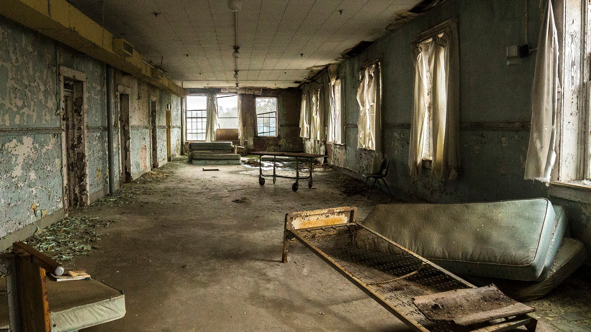

You step away from the foam padded room, once more enduring the crippling dust which with every second fills your eyes. The absence of remaining in the room gives you a fleeting sense of calmness though only lasting at most a few moments. You feel an odd omen as if the culmination of unfound paranormal experiments had laid dormant in that room. Regardless you walk back into the main room, finding two doors still shut and a hall open.
